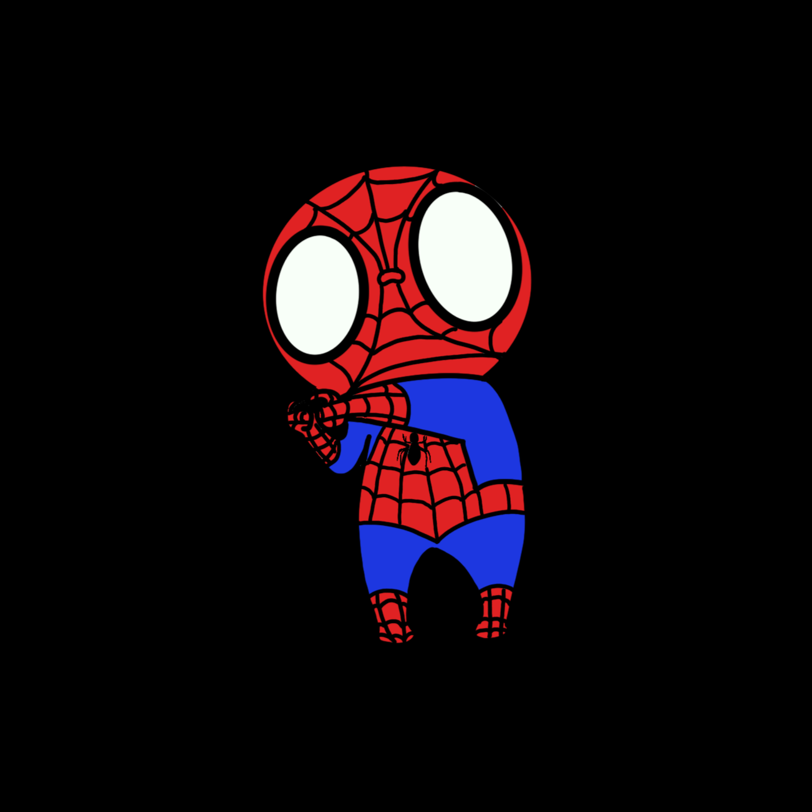
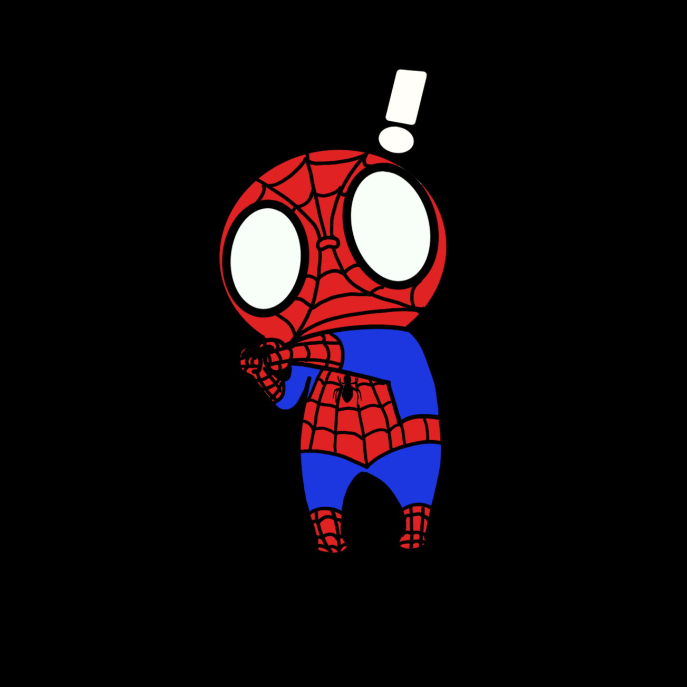
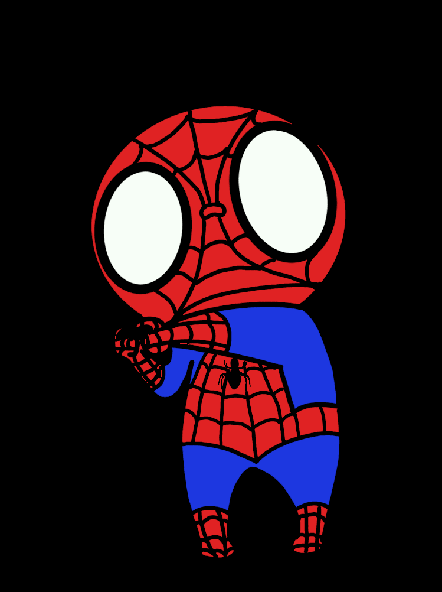

Friendly Neighborhood Spiderman
This project started as a quick creative warm-up. I used Python’s imageIO library to stitch together hand-drawn frames into a simple GIF.

Keepin it Simple
Working with imageIO reminded me how one library has such expansive potential. A quick python syntax refresher.

Made with (Spider) Love
Every frame of the gif was hand drawn by me. Slow but rewarding.